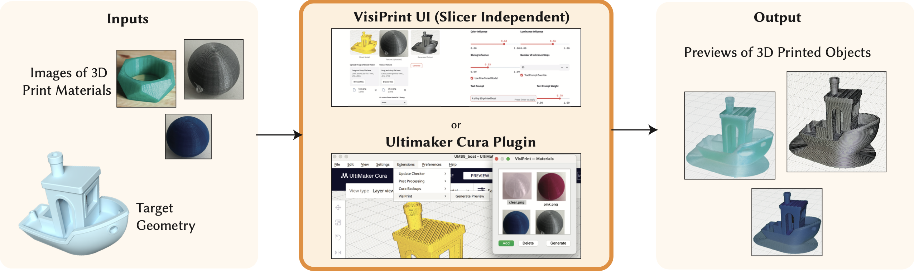
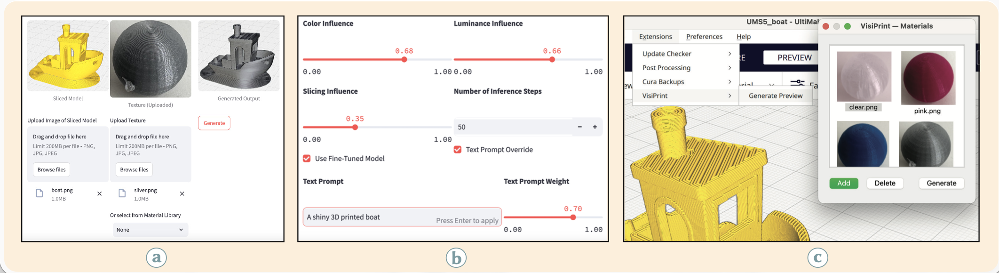

Publication
Maxine Perroni-Scharf, Faraz Faruqi, SooYeon Ahn, Raul Eduardo Hernandez, Szymon Rusinkiewicz, William Freeman, Stefanie Mueller
VisiPrint: Previewing 3D-Print Appearances from Real Material Samples
MIT CSAIL, MIT, Princeton University, and Gwangju Institute of Science and Technology
In Proceedings of CHI ’26.
VisiPrint: Previewing 3D-Print Appearances from Real Material Samples

ABSTRACT
We present VisiPrint, a tool for appearance-first previews of 3D-printed objects. Existing print preview slicers focus on toolpaths rather than appearance, while rendering tools are complex and cannot automatically reproduce slicing patterns. Prior work has shown persistent gaps between digital previews and printed results, including color shifts, gloss and translucency changes, and layer-line highlights. VisiPrint addresses this by combining slicer screenshots with filament photos through a custom diffusion-based synthesis pipeline. We present both a standalone user interface compatible with any slicer and an Ultimaker Cura plugin. We evaluate VisiPrint through a user study showing that it is significantly faster, easier to use, and more faithful than alternatives. VisiPrint narrows the gap between design intent and printed appearance by complementing settings-centric tools with appearance-driven decision support.


BIBTEX
@inproceedings{PerroniScharf2026VisiPrint,
author = {Maxine Perroni-Scharf and Faraz Faruqi and SooYeon Ahn and Raul Eduardo Hernandez and Szymon Rusinkiewicz and William Freeman and Stefanie Mueller},
title = {VisiPrint: Previewing 3D-Print Appearances from Real Material Samples},
booktitle = {Proceedings of the 2026 CHI Conference on Human Factors in Computing Systems (CHI '26)},
year = {2026}
}